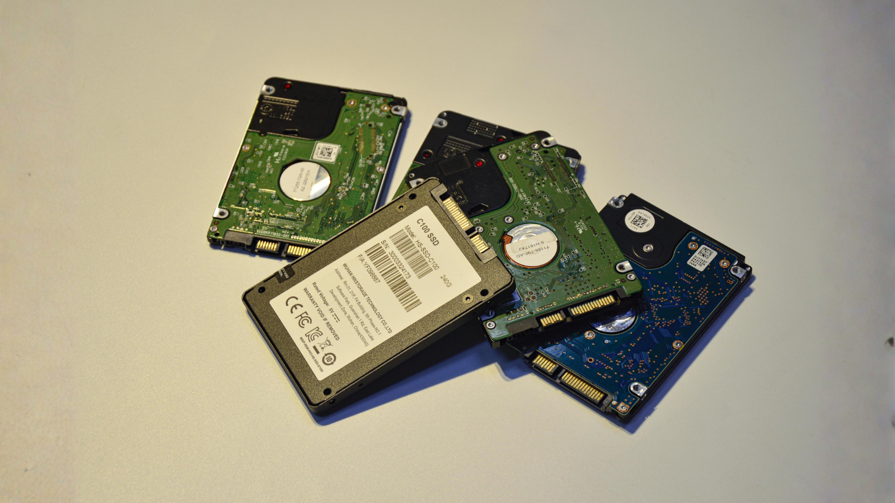
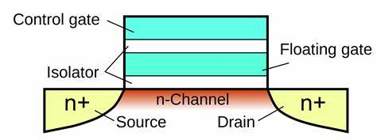
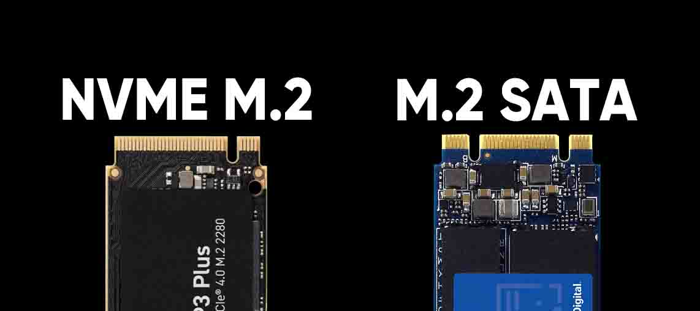

Introduction
Every storage medium before this one had a motor. Punch cards were fed through rollers, drums spun, platters rotated, discs whirled under a laser. In 1991, SanDisk shipped the first commercial solid-state drive — a 20 MB unit with no motor at all. Data was trapped as electrical charge inside silicon, and for the first time, "seeking" a piece of data meant nothing: every cell was equally close.
It took almost two decades for flash to become cheap enough to replace the hard drive in everyday computers. But once NAND flash caught up in price, it changed the shape of the memory hierarchy — closing the long-standing gap between fast, volatile RAM and slow, mechanical secondary storage.

NAND Flash Memory Architecture
A NAND flash chip stores data in floating-gate transistors — a normal transistor with a second, electrically isolated gate buried inside it. Trapping electrons on that floating gate raises the cell's threshold voltage; removing them lowers it. Because the gate is insulated, the charge stays put with no power applied — this is what makes flash non-volatile.

Bar widths are on a log scale to fit five orders of magnitude on one chart — they show containment order (package ⊃ die ⊃ block ⊃ page ⊃ cell), not literal proportional size.
Cells are organized into pages (the smallest unit that can be written) and pages are grouped into blocks (the smallest unit that can be erased). A cell can only hold one voltage state at a time, so more bits per cell means finer voltage steps and a noisier read:
- SLC — 1 bit/cell, 2 voltage states, fastest and most durable.
- MLC — 2 bits/cell, 4 voltage states.
- TLC — 3 bits/cell, 8 voltage states, the mainstream consumer standard.
- QLC — 4 bits/cell, 16 voltage states, cheapest per gigabyte, shortest lifespan.
NAND has one quirk that shapes everything above it: it can write to an empty page, but it cannot overwrite a page directly — the whole block must be erased first. An SSD controller works around this by writing updates to a fresh page elsewhere and marking the old one invalid, then later copying the still-valid pages out of a block and erasing it wholesale. This background process is called garbage collection.
Wear Leveling and Flash Lifespan
Each erase cycle stresses the oxide layer around the floating gate a little more. Eventually a cell can no longer reliably hold a charge, so every NAND cell has a finite budget of program/erase (P/E) cycles — roughly 100,000 for SLC, down to a few hundred for QLC.
Bars are log-scaled — QLC's real endurance is roughly 300× lower than SLC's, not just half as short as the bar might suggest at a glance.
If a drive always rewrote the same "hot" blocks — a swap file, a database log — those blocks would wear out in weeks while the rest of the chip sat untouched. Wear leveling algorithms prevent this by spreading writes evenly across the whole chip:
- Dynamic wear leveling — new writes are steered toward the least-worn free blocks.
- Static wear leveling — even data that never changes is occasionally relocated, so its block re-enters the rotation instead of sitting idle forever.
Drives also reserve a slice of raw capacity that the user never sees, called over-provisioning, to give the controller room to juggle garbage collection and wear leveling without running out of free blocks. The TRIM command lets the operating system tell the drive which pages are no longer in use, so the controller can erase them ahead of time instead of scrambling during a write.
SATA vs. NVMe Interfaces
An SSD is only as fast as the road connecting it to the CPU. Early SSDs were built into the 2.5" form factor and spoke SATA — a protocol and connector designed in 2003 for spinning platters. SATA III tops out around 6 Gbps (about 550 MB/s after overhead), and its command layer, AHCI, supports exactly one command queue, 32 commands deep — plenty for a mechanical drive that could barely keep that queue full, but a hard ceiling for flash.

NVMe (Non-Volatile Memory Express) throws out that legacy path entirely. It talks straight to the CPU over PCIe lanes instead of a storage-specific bus, and its command set was designed from scratch around what flash can actually do: up to 65,535 queues, each up to 65,536 commands deep, so a modern multi-core CPU can issue requests to the drive in parallel instead of standing in one line.
| Interface | Bus | Protocol | Queues × Depth | Typical form factor | Practical throughput |
|---|---|---|---|---|---|
| SATA III SSD | SATA | AHCI | 1 × 32 | 2.5″ | ~550 MB/s |
| NVMe SSD (PCIe 3.0 x4) | PCIe | NVMe | 65,535 × 65,536 | M.2 / U.2 | ~3,500 MB/s |
| NVMe SSD (PCIe 4.0 x4) | PCIe | NVMe | 65,535 × 65,536 | M.2 / U.2 | ~7,000 MB/s |
The gap isn't just bandwidth — it's overhead. Every AHCI command travels through a driver stack built for disks that took milliseconds to respond. NVMe strips that stack down to the operations flash actually needs, cutting CPU cycles spent per command and letting drives fully exploit PCIe's lanes as generations move from PCIe 3.0 to 4.0 and beyond.
Storage Performance: Latency and IOPS
Two numbers describe how "fast" a drive really feels in everyday use, and neither of them is the big MB/s figure on the box.
- Latency — the delay before a single request starts returning data. An HDD pays for a physical seek and rotational delay, often several milliseconds. Flash has no moving parts to wait for, so NVMe latency is typically measured in microseconds.
- IOPS (Input/Output Operations Per Second) — how many individual read or write operations a drive can complete per second, especially with small, random requests. This is the metric that matters for databases, virtual machines, and boot times, where the workload is thousands of tiny scattered requests rather than one long stream.
A 7,200 RPM HDD manages roughly 100–200 random IOPS, limited by how fast its arm can physically move. A SATA SSD reaches tens of thousands. An NVMe drive, freed from AHCI's single queue, can push past a million — not because flash reads any single cell faster than that, but because thousands of requests can be in flight across its parallel queues at once.
Log-scaled again — NVMe's real advantage over a spinning HDD is on the order of 10,000×, not the ~7× the bar lengths alone would suggest.
Interactive: SSD Speed Challenge
Picture a computer that needs to read 16 different pieces of data from a storage drive, all at once — this is a completely normal thing that happens constantly, e.g. when a game loads or an app starts up. Pick a drive, fire the requests, and watch how differently an HDD, SATA SSD, and NVMe SSD cope with the exact same workload.
Race the Read Queue
Send 16 read requests at once and watch an HDD's mechanical arm crawl through them one at a time while an NVMe SSD pulls several at once. Fewer batches and less total time both mean a faster drive.
References
- Micheloni, R., Marelli, A., & Eshghi, K. (2013). Inside Solid State Drives (SSDs). Springer.
- NVM Express, Inc. (2021). NVM Express Base Specification, Revision 1.4c.
- Cai, Y., Haratsch, E. F., Mutlu, O., & Mai, K. (2012). Error Patterns in MLC NAND Flash Memory. Design, Automation & Test in Europe.
- Serial ATA International Organization. (2013). Serial ATA Revision 3.2 Specification.
- SanDisk Corporation. (1991). First Commercial Solid-State Drive Announcement. Company archives.